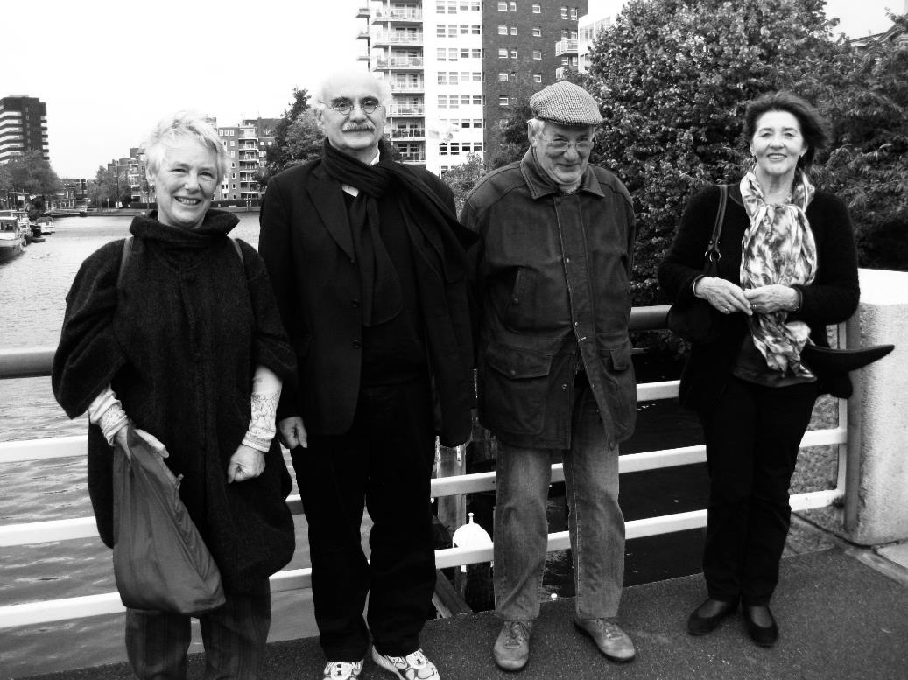

Two of Monique’s Uncles died in WWII and yet the family barely spoke of them – she just knew that they “died fighting in the resistance”. When she read a famous Dutch war story, Soldiers of Orange by Eric Hazelhoff, she found that it included one of her uncles, and she decided to try to find out more about the two young men. With the support of her brother Luc, she began a journey that culminated in this book.
Monique, Ron, Luc and Dini on the first research trip to the Netherlands, 2013 
Information about the book Brothers of Orange, by Monique Bond
Site Maintainer: Francis Bond